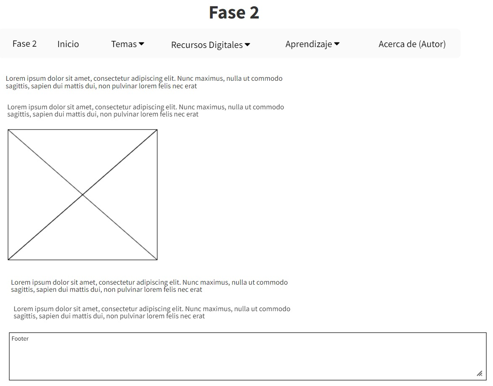

Prototipo de la Pagina

NaBar: Una barra de navegación (o sistema de navegación) es una sección de una interfaz gráfica de usuario diseñada para ayudar a los visitantes a acceder a la información.
Las barras de navegación se implementan en navegadores de archivos , navegadores web y como elemento de diseño de algunos sitios web.
Section: Es un elemento de seccionamiento genérico, diseñado para contener una parte de un documento temáticamente definida. Los contenidos de un elemento section son usualmente precedidos por un encabezado.
Los autores usualmente recurren al elemento section para dividir un documento extenso en capítulos, para separar las diferentes pestañas en un aplicación o para dividir temáticamente las secciones de un documento (sección de anuncios, sección de últimos artículos publicados, sección de vinculos relacionados, etc.).
Article: representa una composición auto-contenida en un documento, página, una aplicación o en el sitio, que se destina a distribuir de forma independiente o reutilizable, por ejemplo, en la indicación. Podría ser un mensaje en un foro, un artículo de una revista o un periódico, una entrada de blog, un comentario de un usuario, un widget interactivo o gadget, o cualquier otro elemento independiente del contenido.
Footer: El footer es la parte inferior de una estructura web en la que generalmente se incluyen links de navegación, enlaces de interés, copyright o botones a las redes sociales del site. El footer suele estar claramente diferenciada de alguna forma del resto de la página web. O bien cambiando el color de fondo del mismo o cambiando el tamaño de la tipografía.